Ортодонтія · журнал «ДентАрт» 2018 №1
Лікування дистальної оклюзії із застосуванням мікрогвинтів
DISTALIZATION OF UPPER MOLARS USING MICROSCREW IMPLANTS
Михайло Соломонюк, стоматологічна клініка «Excelline» (м. Київ, Україна),Айнур Єржанова, Алматинська Школа Стоматолога «DSA», стоматологічна клініка «Perfect Stom» (м. Алмати, Республіка Казахстан)
Останнім часом дуже популярні безекстракційні способи лікування ортодонтичних аномалій оклюзії. Серед них найпоширенішим є дисталізація бічних зубів.
Один з найперших апаратів, який використовували для дисталізації, – Headgear, головна тяга. Однак носіння останньої як способу лікування відкидається багатьма пацієнтами з естетичних і соціальних міркувань і вимагає від них великої відповідальності, тому що апарат слід носити не менше 18 годин на добу. Використання інтраоральних апаратів для дисталізації викликає нахил молярів, а не корпусне переміщення, що є нестабільним і може призводити до рецидиву. Крім того, за відсутності стабільної опори спостерігається небажане зміщення опорних зубів – мезіальне відхилення премолярів і протрузія різців.
Ряд авторів запропонували як опору для переміщення зубів використовувати мікрогвинти – маленькі гвинтики діаметром 1,3-2 мм і довжиною від 5 до 12 мм. Нині є роботи про ефективне використання мікрогвинтів при лікуванні пацієнтів з бімаксилярною протрузією, інтрузією молярів, відкритим прикусом та мезіальною оклюзією.
У нашій роботі ми пропонуємо покроковий спосіб переміщення верхнього зубного ряду з опорою на мікрогвинти, використовуючи механіку ковзання.
Клінічний випадок
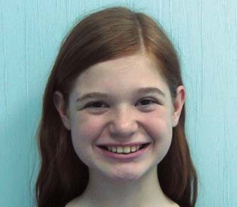
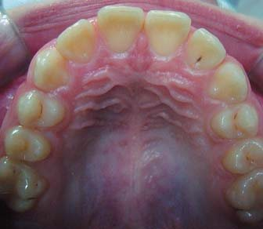
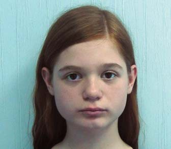
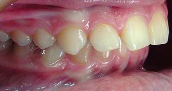
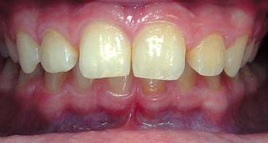
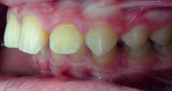
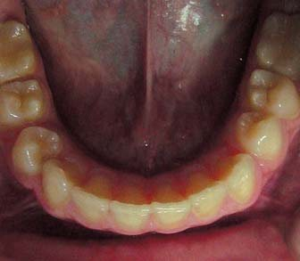
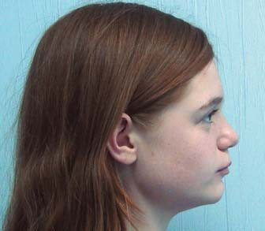
Фото 1. Пацієнтка 13 років. Фото до лікування.
При зовнішньому огляді обличчя симетричне, пропорційне, мезіоцефалічний тип. Профіль опуклий, губи в спокої зімкнуті, дихання носове. Підборідна і носогубна складки середньої вираженості.
Інтраоральний огляд виявив співвідношення молярів – II клас за Енглем, ускладнене глибокою різцевою оклюзією. Аналіз гіпсових моделей виявив вільний простір на верхній зубній дузі 3 мм, на нижній зубній дузі дефіцит місця 2 мм, оклюзійна крива Шпеє – 2,5 мм.
На ортопантомограмі резобції і запальних явищ не виявлено. Формування зубів 18, 28, 38, 48 на 1/3 величини кореня (фото 2).
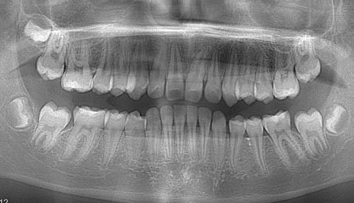
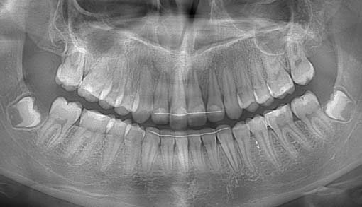
Фото 2. Ортопантомограма до і після лікування.
Розшифровування телерентгенографії (ТРГ) до лікування в бічній проекції засвідчило скелетний I клас, кут ANB – 3° (утворений найглибшим краєм на верхній щелепі – точкою А, з'єднанням носо-лобного шва – точкою Nа і найглибшою заглибиною на нижній щелепі – точкою В), SNA – 85° (кут між краніальною площиною SN і точкою А на верхній щелепі), SNB – 82° (кут, утворений перетином площиною SN і точкою В на нижній щелепі) (фото 3). Нижньощелепний кут FMA був знижений до 12° (кут, утворений нижньощелепною площиною – FH).
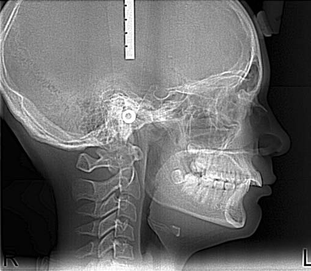
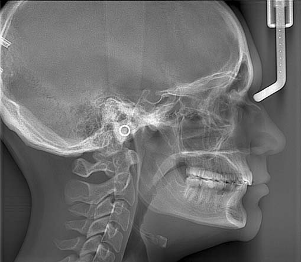
Фото 3. Телерентгенографія до і після лікування.
Нахил верхніх різців U1 до FH (кут, утворений віссю верхніх центральних різців U1 до FH) дорівнював 125°. IMPA був збільшений до 105° (кут між віссю нижніх центральних різців і нижньощелепною площиною). Occ P до FH (кут між оклюзійною площиною і FH) відповідав 12°. Зменшення співвідношення передньої лицьової висоти по відношенню до задньої – індекс PFH/AFH – становив 0,7. Z-angle (перетин площини FH з лінією, що проходить через найбільш виступаючий край підборіддя і губи) знижений до 60° (таблиця 1).
На підставі даних клінічних обстежень, антропометричного дослідження моделей щелеп, використання додаткових спеціальних методів дослідження – ТРГ в бічній проекції і ортопантомограми – було поставлено діагноз: горизонтальний тип росту лицьового скелета, скелетний I клас, співвідношення молярів та іклів – II клас за Енглем, ускладнене глибокою різцевою оклюзією.
| Цефалометричні кути (°) | Середні значення | До лікування | Після лікування | 1 рік ретенції |
|---|---|---|---|---|
| SNA | 82 | 85 | 84 | 85 |
| SNB | 80 | 82 | 82 | 83 |
| ANB | 2 | 3 | 2 | 2 |
| FMA | 25 | 12 | 15 | 15 |
| PFH/AFH | 0,8 | 0,9 | 0,9 | 0,9 |
| FH до Occ P | 10 | 10 | 5 | 8 |
| U1 до FH | 114 | 125 | 113 | 116 |
| IMPA | 90 | 105 | 100 | 101 |
| Z-angle | 75 | 75 | 80 | 80 |
Лікувальні етапи, потрібні для корекції виявленої патології:
- Санація ротової порожнини.
- Вирівнювання зубних дуг верхньої і нижньої щелеп.
- Нормалізація сагітального співвідношення верхніх і нижніх центральних різців.
- Корекція глибокої різцевої оклюзії.
- Поліпшення лицьового профілю.
- Установка співвідношення на іклах і молярах – I клас з досягненням функціональної оклюзії.
Для вирішення цих завдань пацієнтці було запропоновано кілька варіантів лікування. Перший варіант передбачав видалення премолярів на верхній і нижній зубній дузі, від чого пацієнтка категорично відмовилася.
Альтернативний лікувальний план – дистальне переміщення верхніх зубів з опорою на мікрогвинти. Видалення ретенованих нижніх зубів мудрості. Пацієнтка погодилася на цей лікувальний план.
Було встановлено незнімну апаратуру «пропис Рот» c пазом 0,22 дюйма і фіксованою первинною нікель-титановою дугою розміром 0,14 дюйма, потім 0,16 і 0,16-0,25 дюйма. Після вирівнювання зубних дуг встановлено сталеву дугу 0,19-0,25 дюйма на брекети верхнього і нижнього зубного ряду. Для створення абсолютної опори в міжкореневий простір між другими премолярами і першими молярами на верхній щелепі в діагональному напрямку під кутом 60° до поверхні кістки було встановлено 2 мікрогвинти товщиною 1,5 мм і довжиною 7 мм фірми Dentos AbsoAnchor, Корея. На верхній сталевій дузі між латеральними різцями та іклами напаяні гачки. Для дисталізації верхніх бічних зубів встановлено розкриваючі нітінолові пружини на дугу між брекетами других премолярів і перших молярів. Під час кожного візиту пацієнтки робили активацію розкриваючої пружини шляхом її подовження на ширину брекета премоляра. Щоб запобігти протрузійній дії розкриваючої пружини на фронтальні зуби, від головки мікрогвинта до напаяних на дузі гачків були фіксовані на обидва боки закриваючі нітінолові пружини силою 150 мг кожна (фото 4).
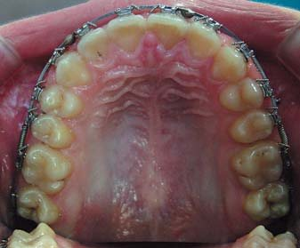
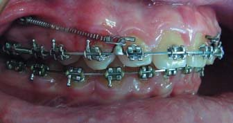
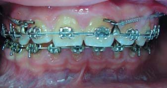
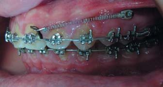
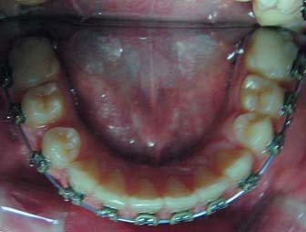
Фото 4. Встановлено два мікрогвинти на верхній щелепі.
Дисталізація молярів була закінчена після досягнення їх змикання – I клас за Енглем, після чого мікрогвинти вийнято.
Переміщення премолярів та іклів у дисталізуючий простір провадили за допомогою розкриваючих нітінолових пружин, встановлених між брекетами цих та сусідніх зубів з кожного боку. Фіксували еластичні тяги від нижніх других молярів до припаяних гачків на дузі на верхній щелепі між брекетами іклів та латеральних різців для обмеження протрузії фронтальних зубів. Для запобігання екструзії других молярів, збільшення міжщелепного кута FMA, ротації оклюзійної площини встановили мікрогвинти на нижній щелепі між другими премолярами і першими молярами. До напаяних на нижній дузі гачків були фіксовані по обидва боки закриваючі нітінолові пружини силою 150 мг кожна. Після того, як співвідношення премолярів та іклів стало I клас за Енглем, сталеву дугу секційно розподілили в зоні брекета ікла з мезіальної поверхні з кожного боку. Повторно встановлено в міжкореневий простір між другими премолярами і першими молярами на верхній щелепі в діагональному напрямку під кутом 60° до поверхні кістки два мікрогвинти товщиною 1,5 мм і довжиною 7 мм (Dentos AbsoAnchor, Корея). На сталевій дузі 0,19-0,25 дюйма було зігнуто два гачки. Дугу підв'язали до брекетів центральних і бічних різців. Для ретракції різців від мікрогвинтів до гачків на секційній дузі фіксували закриваючі нітінолові пружини силою 200 мг до повного закриття вільних просторів (фото 5).
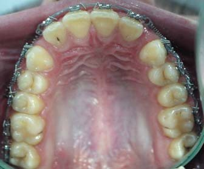
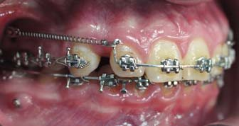
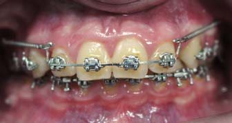
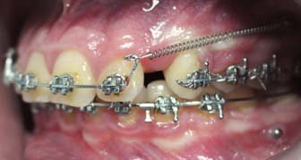
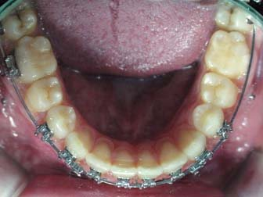
Фото 5. Моляри й ікла встановлені I клас за Енглем. Ретракція різців.
Результати лікування
Незнімну апаратуру зняли через 24 місяці після початку лікування. Аналіз фотографій обличчя виявив помітне поліпшення лицьового профілю. На інтраоральних фотографіях зубні дуги вирівняні (фото 6).
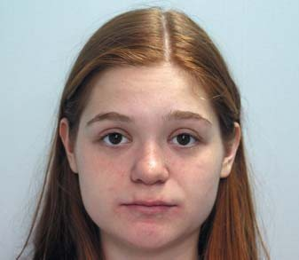
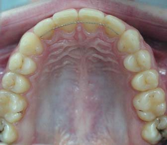
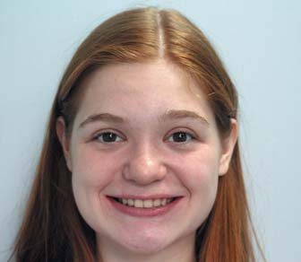
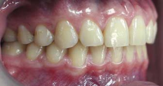
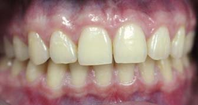
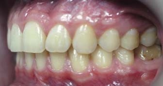
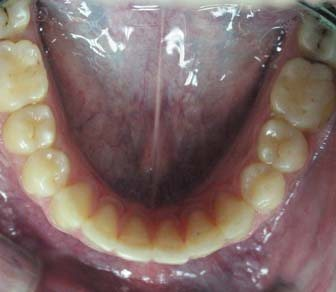
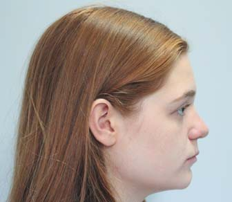
Фото 6. Після лікування.
Аналіз моделей показав середні значення сагітального і вертикального співвідношення різців. Співвідношення зубних рядів – I клас за Енглем, збіг середньої лінії на верхньому і нижньому зубному ряду. При діагностиці в артикуляторі у стані спокою виявлені щільний міжгорбиковий контакт між зубними рядами, відсутність передчасних контактів при бічних рухах нижньої щелепи, передня напрямна та іклове ведення з обох боків. Цефалометричний аналіз засвідчив зменшення протрузії верхніх центральних різців, незначне підвищення кута FMA. При накладенні цефалометричних обрисовок до і після лікування відзначається корпусна дисталізація верхніх бічних зубів близько 4 мм. На ортопантомограмі корені зубів паралельні, відсутня їх резорбція. Мікрогвинти забезпечували повноцінний анкораж при дисталізації, симптомів їх рухливості або втрати в процесі лікування не спостерігалося.
Через 1 рік ретенційного періоду при клінічному огляді явища рецидиву були відсутні, спостерігалася стабільність раніше отриманих результатів. Співвідношення іклів і молярів – I клас за Енгем (фото 7). Відсутність скупченості фронтальних зубів верхнього і нижнього зубного ряду. Зубні дуги мають правильну форму, в нормі сагітальне і вертикальне співвідношення різців. Симптомів дисфункції скронево-нижньощелепного суглоба немає.
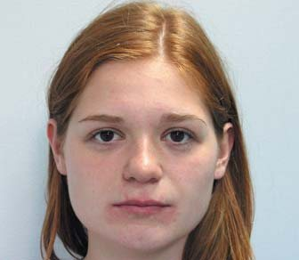
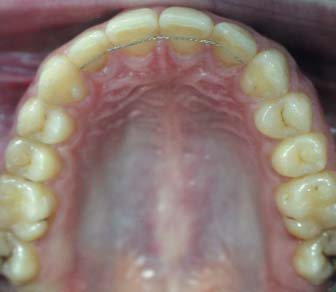
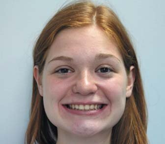
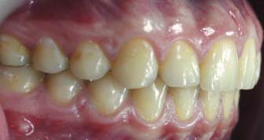
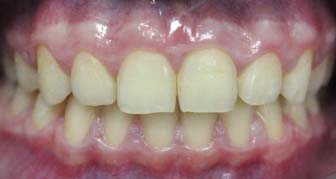
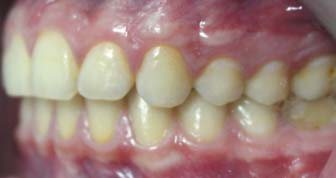
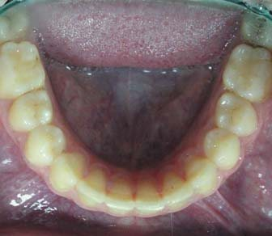
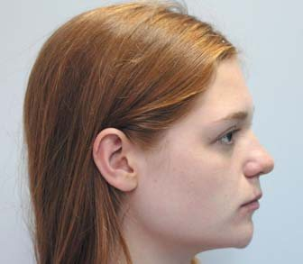
Фото 7. Фото пацієнтки через 1 рік після лікування.
Аналіз телерентгенографії (ТРГ) у бічній проекції через 1 рік після лікування засвідчив стабільність раніше отриманих показників. Кут ANB – 2°, кути SNA – 85°, SNB – 83°, нижньощелепний кут FMA – 15°. Положення верхніх різців U1 до FH дорівнює 116°. Відношення нижніх центральних різців – IMPA відповідає 101°. FH до Occ P 8°. Індекс PFH/AFH становить 0,9 (фото 8).
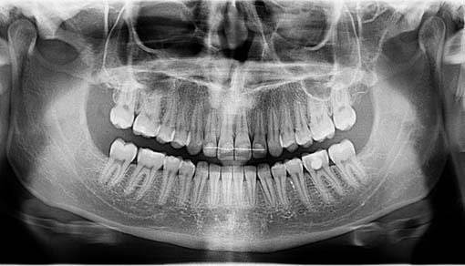
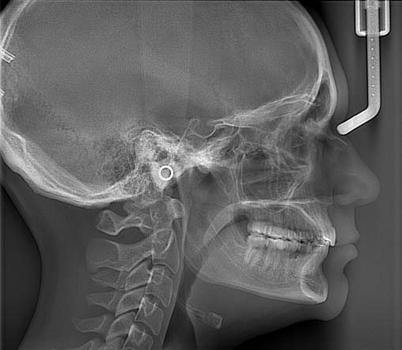
Фото 8. Телерентгенограма і ортопантомограма через 1 рік після лікування.
Після 2-х років ретенційного періоду відзначається стійкість досягнутих результатів лікування. Положення зубних рядів зберігалося – I клас за Енглем. Вертикальне і горизонтальне положення різців не змінилося (фото 9).
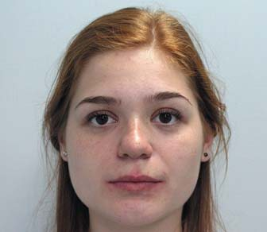
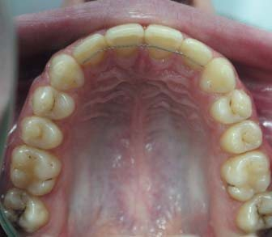
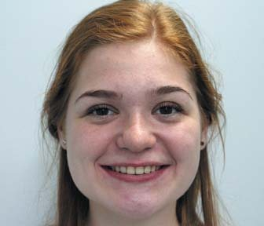
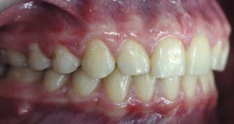
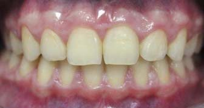
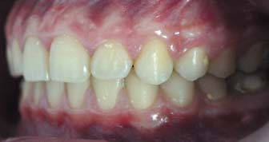
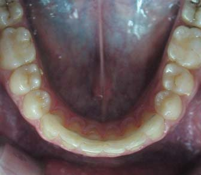
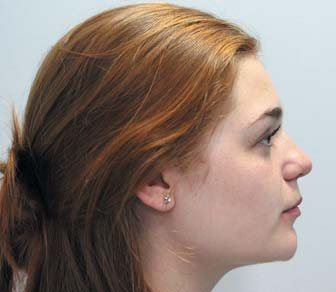
Фото 9. Фото пацієнтки через 2 роки після лікування.
Аналіз і обговорення
Дисталізація верхніх бічних зубів за допомогою мікрогвинтів забезпечує максимум переваг у порівнянні з інтраоральними пристосуваннями. Немає необхідності в попередньому застосуванні дисталізуючого апарата – лікування починається безпосередньо із встановлення незнімної системи. Послідовна групова дисталізація верхніх зубів вимагає застосування набагато менших сил (тим самим знижується ризик резорбції коренів і втрати мікрогвинта), передбачає мінімальне згинання дуг, знижує час для активації апаратури. Відсутність протрузії центральних різців, яка спостерігається при використанні інтраоральних дисталізуючих апаратів, значно зменшує загальну тривалість лікування.
У цьому клінічному прикладі моляри верхньої щелепи були дисталізовані корпусно без нахилу і втрати анкоражу, це знижує ризик виникнення рецидиву після лікування. На етапах планування ортодонтичного лікування дуже важливо робити селекцію пацієнтів, які потребують лікування – II клас за Енглем з видаленням премолярів, дисталізація верхніх молярів або застосування функціональних апаратів.
Найбільше підходить дисталізація пацієнтам з низьким нижньощелепним кутом FMA, горизонтальним типом росту лицьового скелета, що поєднується з ANB кутом не більше 4°. Видалення премолярів у такої категорії пацієнтів небажане, бо це може призводити до зменшення вертикальних розмірів обличчя, погіршення профілю: поглиблення підборідної і носогубної складки, і як результат, пацієнт може мати вигляд значно старшого за свій реальний вік.
Для пацієнтів із середніми значеннями FMA, значною скупченістю зубів, поєднаною з глибокою оклюзійною кривою Шпеє, протрузією різців, опуклим профілем варіант лікування з видаленням премолярів кращий. Зменшення висоти обличчя не відбувається, оскільки вільний простір після видалення зубів компенсується вирівнюванням зубних рядів. Пацієнтам з низьким FMA, ускладненим сагітальними аномаліями, тобто кут ANB більший, ніж 4°, для корекції класу II потрібне двофазне лікування. На першому етапі рекомендоване застосування функціональних апаратів, після чого – використання незнімної техніки.
У пацієнтів з високими і середніми вертикальними показниками кута FMA для корекції класу II дисталізація не застосовується, оскільки дистальне усунення молярів значно підвищує висоту обличчя, викликаючи ефект розклинювання, до того ж сама незнімна техніка є екструзивною.
Висновки
- Використання опори на мікрогвинтах дозволяє провадити корпусну дисталізацію молярів без втрати анкоражу.
- Найстабільніший дисталізуючий ефект спостерігається у пацієнтів з горизонтальним типом росту, низьким кутом FMA, скелетним класом I.
- Скупченість зубної дуги понад 7 мм, високий IMPA і FMA – протипоказання до дисталізації.
- Для стабільної опори на верхній щелепі для дисталізації слід встановлювати мікрогвинт не менше 1,5 мм діаметром і 7 мм довжини.
- Успіх дисталізації залежить від щільності кісткової тканини пацієнта, клінічних навичок ортодонта, проведених диференційно-діагностичних етапів, вибору діаметру, місця і напрямку встановлення мікрогвинта, навантаження, гігієни ротової порожнини.
Література
- Proffit W.R. Contemporary Orthodontics // 2nd ed. St Louis, Mo: CV Mosby. – 1993. – P. 306-307.
- Tomas M. Graber. Orthodontics. Current Principles and Techniques // 2000. – P. 654-707.
- Cetlin N.M., Ten Hoeve A. Non extraction treatment // J. Clin. Orthod. – 1993. – Vol. 17. – P. 396-413.
- Park H.S. The skeletal cortical anchorage using titanium micro-screw implants // Korean. J. Orthod. – 1999. – Vol. 29. – P. 699-706.
- Bae S.M., Park H.S., Kyung H.M., Kwon O.W., Sung J.H. Clinical application of micro-implant anchorage // J. Clin. Orthod. – 2002. – Vol. 36. – P. 298-302.
- Соломонюк М.М. Дистализация верхних боковых зубов у взрослых пациентов с дистальной окклюзией зубных рядов с применением микроимплантатов // Ортодонтия. – 2013. – №4. – С. 52-58.